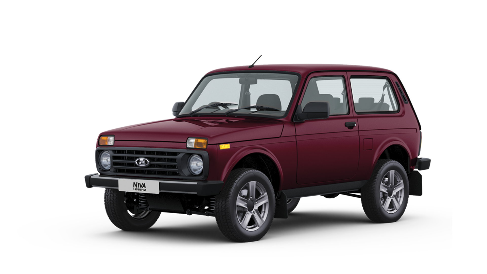

Flexbox разметка в CSS даёт один из наиболее эффективных способов расстановки, выравнивания и распределения места между элементами внутри контейнера, даже если их размер неизвестен или динамичен (собственно, по этому его и называют flex, от слова flexible, что по-английски имеет двойственное значение — гибкий и уступчивый, что очень сочетается с моделью поведения flexbox). Основной целью flexbox является предоставление возможности изменения своих элементов по ширине и высоте, для того, чтобы они максимально эффективно умещались в доступном месте родительского контейнера, в частности — это удобно в тех случаях, когда нужно соответствовать всем типам дисплеев устройств и размерам экранов. Flex контейнер расширяет вложенные элементы для того, чтобы заполнить доступное пространство или же урезает их, чтобы избежать переполнения. Очень важный момент, flexbox независим от направления, в отличие от обычных шаблонов, блочная модель основана на вертикальном размещении элементов, а инлайновая на горизонтальной. Пока это достаточно хорошо работало на простых страницах (и сайтах), эти недостатки в гибкости довольно сильно влияли на поддержку больших и сложных приложений, особенно когда дело касалось смены ориентирования, ресайзинга, растягивания или наоборот сокращения элементов.